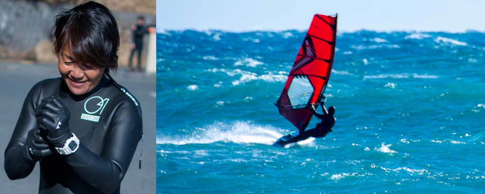
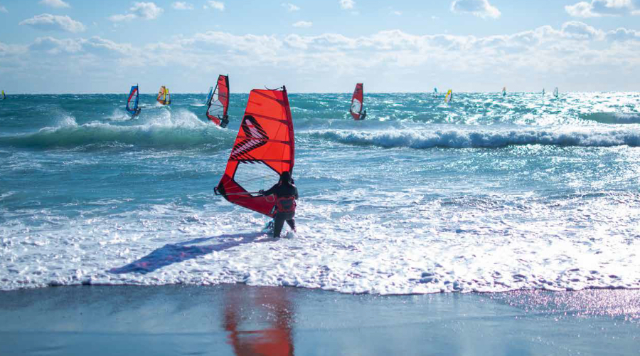
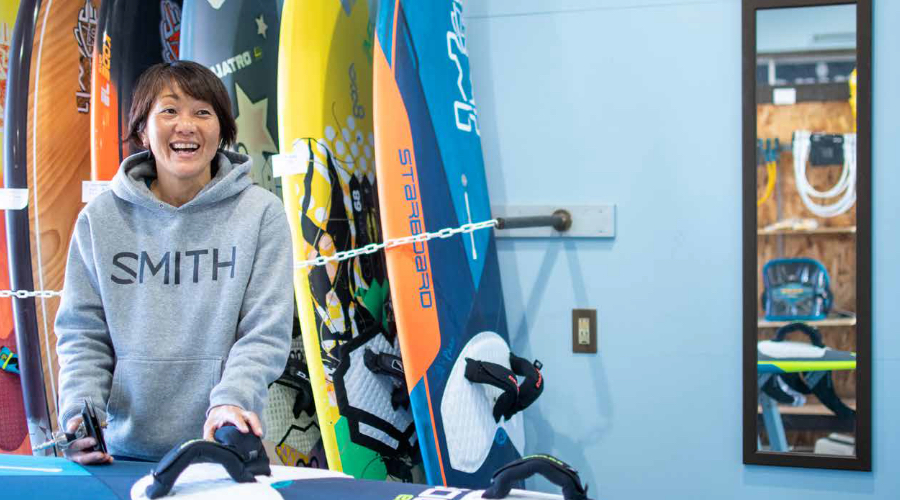
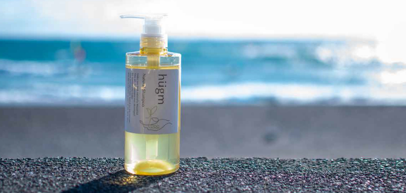

vol. 002 
user’s voiceプロウインドサーファー
佐藤素子さん
プロウィンドサーファーとしてmoonbow surfに店長として、二人の子どもさんたちの母として、色々な顔を持ち、日々風と向き合い、海に向かう佐藤さん。プロとしてのウィンドサーフィンとの向き合い方について聞いた。
ハワイで出会った「ウェイブセイリング」

－－なぜウィンドサーフィンを始めたんですか？
大学入学でウィンドサーフィン部の勧誘があって、ウィンドサーフィン自体その時は知らなかったけど、マリンスポーツもかっこいいなと思って、大学時代からスタートしました。大学生の時はオリンピック選手でコースレースっていうヨットみたいに回る種目をやっていたんですが、自分がやりたいのはハワイに行った時に見た波乗りしたりジャンプしたりするウェイブセイリングだったので、大学卒業と同時に種目を変えました。もう始めて30年も経ちます。
風が強く吹く冬にも海に入る
－－日本の女子プロ選手はどれくらいいるんですか？
ウェイブ種目でプロに認定されているのは5人くらいです。ウィンドサーフィンの中でもコースレースの方では女子選手も多いんですが、やはり風が強く吹く冬に海に入らなければならないので、過酷ですよね。冬にこのスポーツをやる女子は少ないし、なかなか人にも勧められないです。娘にもウィンドサーフィンは勧められなかったです。時代的にも若い子があえて大変な事は選ばないですよね。
一生懸命やっていればご褒美がある
－－辞めたいと思った事はないですか？
ないです！調子が悪くてつらい時とか、出産した後は出産前と比べてイメージと違ったりして大変だと思ったことはあったけど、辞めたいとは思わなかった。楽しい訳ではないんですけど、何か１つの事を上を目指して一生懸命やる事が好きなんです。挫折しなかったのは、うまくなっていくのがとにかく楽しかったからですかね。
ハワイのマウイ島のホキパでウィンドサーフィンのすごさを実感して、「絶対一生こんなことできないよな」って思ったんですが、そこでチャンピオンになってやればできるんだと思ったんです。
－－ウィンドサーフィンをやっていく上で大事にしている事ってありますか？
自然が相手だから自分の思うようにはいかないし、そういう事から学ぶ事がたくさんあります。そういう事は大事にしていきたい。一生懸命やっていればご褒美があるし、一生懸命やっていれば達成感があるということ。子供たちにも伝えているけれど、言わなくても見てきているから分かっていると思いますね。
娘と一緒にサーフィンを楽しむ

－－プライベートではどんな感じなんですか？
プライベートでも海に入ってる事が多いです。娘はサーフィンをやっていて、世界を目指してやっているのでその大会に付き合ったり、夏はウィンドサーフィンにとっては良い風が吹かないのでハワイに毎年3ヶ月くらい行くんです。（今年はコロナもあったので20年ぶりくらいにハワイに行けなかったんですが・・・）その時は子どもたちも連れて行って、娘も息子も夏休みを使うんですが、1ヶ月半くらいは向こうの学校に通うんです。
hugmナチュラルシャンプーを使ってみて
－－hugmナチュラルシャンプーを使ってどうでしたか？？
泡がキメ細やかですごく良かった、香りも高級感のあるオーガニックなナチュラルな香りで、やっぱりお風呂ですか良い香りがした方が良いからいいですよね。サラサラ感、オールインワンだとキシキシしちゃう事があるけど、オールインワンにしてはすごいサラサラ感、使い心地も良かったですね。子どもが生まれてからとにかく時間がないからオールインワンでお手入れに手間暇が掛からないのは嬉しいですね。

編集後記
やればいつか夢が叶う。プロであり続ける事の大変さの中で、常に上を目指し続けて努力を続ける。そんな姿を子どもさんたちにも背中で伝え、子どもさんたちもきっと後ろ姿から感じとっているのだろう。「よっぽどのMじゃないと、ウィンドサーフィンはできないよ」と笑顔で言う佐藤さんの姿は、覚悟に満ち、真正面から全てを受け入れるそんな海のような広い心を感じた。